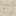
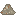
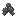
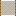
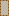
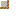

LimestoneWapieńLimestone and gypsumWapień i gips
Limestone (CaCO3) lies in wide, pale layers in the stone of every region; calcite is the same mineral. Gypsum forms smaller white beds, more often under deserts and badlands, where water evaporated. The shredder grinds them: limestone or calcite -> 1 limestone powder, gypsum -> 2 gypsum powder.
Wapień (CaCO3) leży w szerokich, jasnych warstwach w kamieniu w każdym rejonie; kalcyt to ten sam minerał. Gips tworzy mniejsze białe złoża, częściej pod pustyniami i badlandami, gdzie wyparowała woda. Rozdrabniacz je miele: wapień lub kalcyt -> 1 mączka wapienna, gips -> 2 mielony gips.
LimestoneWapieńGypsumGipsLimestone PowderMączka wapienna Gypsum PowderMielony gips
Gypsum PowderMielony gips RecipesReceptury
ShredderRozdrabniacz
LimestoneWapień→ ShredderRozdrabniacz→Limestone PowderMączka wapienna
ShredderRozdrabniacz→Limestone PowderMączka wapienna ShredderRozdrabniacz
GypsumGips→ShredderRozdrabniacz→2Gypsum PowderMielony gips Cement Kiln BlueprintPlan pieca cementowego
Cement kilnPiec cementowy
A vertical shaft kiln built from a blueprint on a finished firebox: 6 layers of 8 firebricks around an open shaft, 16 fireclay, the chisel cuts the discharge opening. The fire below heats the charge: above 900 °C the limestone calcines (CaCO3 -> CaO + CO2), at 1450 °C clinker forms - 3 raw meal -> 2 clinker (1.55 t of raw meal gives 1 t). It needs a coal fire: wood (1400 °C) and lava (1150 °C) can't reach 1450 °C. A batch takes about 5 minutes; a cold kiln heats up in about 3. The GUI shows the charge temperature and what the kiln is doing.
Piec szybowy budowany z planu na gotowym palenisku: 6 warstw po 8 cegieł szamotowych wokół otwartego szybu, 16 gliny ogniotrwałej, dłuto wycina otwór wylotowy. Ogień pod spodem grzeje wsad: powyżej 900 °C wapień kalcynuje (CaCO3 -> CaO + CO2), przy 1450 °C powstaje klinkier - 3 mąki surowcowej -> 2 klinkieru (z 1,55 t mąki wychodzi 1 t). Potrzebny jest ogień z węgla: drewno (1400 °C) i lawa (1150 °C) nie dojdą do 1450 °C. Wsad trwa ok. 5 minut; zimny piec nagrzewa się ok. 3. GUI pokazuje temperaturę wsadu i co piec robi.
Cement Kiln BlueprintPlan pieca cementowego
Raw MealMąka surowcowa
ClinkerKlinkier | ClinkeringKlinkieryzacja | 1450 °C1450 °C |
| BatchWsad | 3 → 23 → 2 |
| EnergyEnergia | ≈5.5 GJ/t≈5,5 GJ/t |
RecipesReceptury
CraftingWytwarzanie
Limestone PowderMączka wapiennaLimestone PowderMączka wapiennaLimestone PowderMączka wapiennaCBClay BallKulka gliny
→4Raw MealMąka surowcowa Ground ClinkerMielony klinkier
Ground ClinkerMielony klinkierCementCement
Portland cement: clinker ground in the shredder, mixed with gypsum - 8 ground clinker + 1 gypsum powder = 8 cement (about 6 % gypsum, as in real cement; it stops the concrete setting in minutes). 1 cement = 100 kg.
Cement portlandzki: klinkier zmielony w rozdrabniaczu, zmieszany z gipsem - 8 mielonego klinkieru + 1 mielony gips = 8 cementu (ok. 6 % gipsu, jak w prawdziwym cemencie; dzięki niemu beton nie wiąże w kilka minut). 1 cement = 100 kg.
Ground ClinkerMielony klinkierCementCement RecipesReceptury
ShredderRozdrabniacz
ClinkerKlinkier→ShredderRozdrabniacz→Ground ClinkerMielony klinkier  Concrete Form (Full Block, Closed)Szalunek (pełny blok, zamknięty)
Concrete Form (Full Block, Closed)Szalunek (pełny blok, zamknięty)Wooden formsSzalunki
44 forms: 4 shapes (full block, slab, vertical slab, half slab) × 6 variants (open both sides, open one side, closed, turn, one wall, no walls - slab and full block only), each also with planks on the bottom. Placed relative to where you look; the half-wide shapes take the half of the block you click, a turn the corner you click. No bottom unless it has planks - forms stack, and concrete runs down into the one below. Broken empty, the form comes back.
44 szalunki: 4 kształty (pełny blok, płyta, pionowa płyta, połowa płyty) × 6 wariantów (otwarty z dwóch stron, z jednej, zamknięty, zakręt, jedna ścianka, bez ścianek - tylko płyta i pełny blok), każdy także z deskami na dnie. Stawiane względem tego, gdzie patrzysz; wąskie kształty zajmują połowę bloku, którą klikniesz, zakręt - kliknięty róg. Bez dna, chyba że ma deski - szalunki stawia się jeden na drugim, a beton spływa do niższego. Rozbity pusty - wraca.
Concrete Form (Full Block, Closed)Szalunek (pełny blok, zamknięty)
Concrete Form (Slab, Open Both Sides)Szalunek (płyta, otwarty z dwóch stron) Concrete Form (Vertical Slab, Open Both Sides)Szalunek (pionowa płyta, otwarty z dwóch stron)
Concrete Form (Vertical Slab, Open Both Sides)Szalunek (pionowa płyta, otwarty z dwóch stron)
Concrete Form (Half Slab, Closed)Szalunek (połowa płyty, zamknięty)
Concrete Form (Vertical Slab, Turn)Szalunek (pionowa płyta, zakręt)Concrete Form (Slab, No Walls)Szalunek (płyta, bez ścianek)Concrete Form (Full Block, Closed, Planks on the Bottom)Szalunek (pełny blok, zamknięty, z deskami na dnie) | Parts of a blockCzęści bloku | 8 × (8×8×8 px)8 × (8×8×8 px) |
 Bucket of Liquid ConcreteWiadro płynnego betonu
Bucket of Liquid ConcreteWiadro płynnego betonuLiquid concretePłynny beton
Right-click a form: 1 bucket = 1 block of concrete. It flows through open sides and down, fills the lowest level of the whole run first and spreads evenly; open to the air, it all runs out and sets on the ground as slabs.
Prawy klik na szalunek: 1 wiadro = 1 blok betonu. Płynie przez otwarte boki i w dół, wypełnia najpierw najniższy poziom całego ciągu i rozlewa się równo; otwarty na powietrze - wszystko wypływa i zastyga na ziemi jako płyty.
| Setting timeCzas wiązania | 10 minutes of play10 minut gry |
RebarPręt zbrojeniowy
RebarZbrojenie
Laid in an empty form before the pour (right-click). A single bar is cheaper, a cage stronger.
Wkładane do pustego szalunku przed wylaniem (prawy klik). Pojedynczy pręt jest tańszy, kosz mocniejszy.
RebarPręt zbrojeniowyRebar CageKosz zbrojeniowy
| StrengthWytrzymałość | concrete > stone; + bar > concrete; + cage the strongestbeton > kamień; + pręt > beton; + kosz najmocniejszy |
 ConcreteBeton
ConcreteBetonConcreteBeton
What is left when the form comes off: exactly the parts that were cast, with the rebar inside. Wet concrete is darker and sets on its own after 10 minutes.
To, co zostaje po zdjęciu szalunku: dokładnie te części, które odlano, ze zbrojeniem w środku. Mokry beton jest ciemniejszy i sam wiąże po 10 minutach.